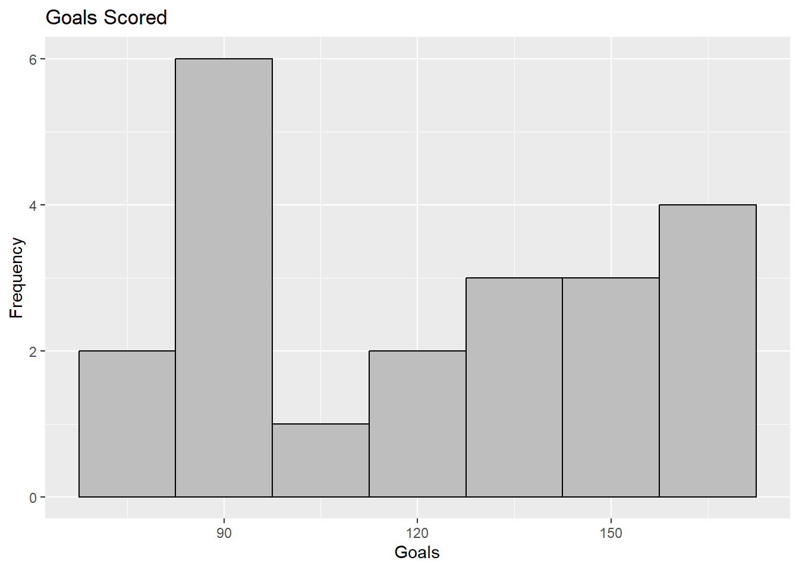

── Attaching core tidyverse packages ──────────────────────── tidyverse 2.0.0 ──
✔ dplyr 1.1.4 ✔ readr 2.1.5
✔ forcats 1.0.0 ✔ stringr 1.5.1
✔ ggplot2 3.5.1 ✔ tibble 3.2.1
✔ lubridate 1.9.4 ✔ tidyr 1.3.1
✔ purrr 1.0.2
── Conflicts ────────────────────────────────────────── tidyverse_conflicts() ──
✖ dplyr::filter() masks stats::filter()
✖ dplyr::lag() masks stats::lag()
ℹ Use the conflicted package (<http://conflicted.r-lib.org/>) to force all conflicts to become errors8 Univariate Viz
Use this file for practice with the univariate viz in-class activity. Refer to the class website for details.
Exercise 1: Research Questions
peak elevation difficulty ascent length time rating
1 Mt. Marcy 5344 5 3166 14.8 10.0 moderate
2 Algonquin Peak 5114 5 2936 9.6 9.0 moderate
3 Mt. Haystack 4960 7 3570 17.8 12.0 difficult
4 Mt. Skylight 4926 7 4265 17.9 15.0 difficult
5 Whiteface Mtn. 4867 4 2535 10.4 8.5 easy
6 Dix Mtn. 4857 5 2800 13.2 10.0 moderate- What features would we like a visualization of the categorical difficulty
ratingvariable to capture?
- the frequency of each difficulty (how many hikes are moderate, etc)
- the percentage of each difficulty (what percent were moderate, etc)
- What about a visualization of the quantitative
elevationvariable?
- the number of peaks within a certain threshold (eg 4500-5000, 5001-5500, etc)
Exercise 2: Load Tidyverse
Exercise 3: Bar Chart of Ratings - Part 1
# Adds a bar chart with the number/count of hikes of each difficulty [geom_bar()]
ggplot(hikes, aes(x = rating)) +
geom_bar()# Adds a layer (label) that changes the y-axis label to be "Number of hikes" [labs(y = "Number of hikes")]
ggplot(hikes, aes(x = rating)) +
geom_bar() +
labs(x = "Rating", y = "Number of hikes")Exercise 4: Bar Chart of Ratings - Part 2

Exercise 5: Bar Chart Follow-up
Part a
Reflect on the ggplot() code.
- What’s the purpose of the
+? When do we use it?- The
+adds another layer to the plot. We use it when we want to add an additional component to our chart (eg labels, graph, etc)
- The
- We added the bars using
geom_bar()? Why “geom”? - Geometric??
- What does
labs()stand for?- Labels
- What’s the difference between
colorandfill?- Color
outlines the bars, butfill` fills in the bars
- Color
Part b
In general, bar charts allow us to examine the following properties of a categorical variable:
-
observed categories: What categories did we observe?
- rating of hike (easy, moderate, difficult)
-
variability between categories: Are observations evenly spread out among the categories, or are some categories more common than others? Some categories are more common than others.
- Moderate was the most frequent and difficult was the least frequent.
We must then translate this information into the context of our analysis, here hikes in the Adirondacks. Summarize below what you learned from the bar chart, in context.
The majority of hikes in the Adirondacks were rated ‘moderate.’ Specifically, 27 of the 46 hikes (58.69%) were moderate. Difficult was the least frequent rating, with only 8 ratings.
Part c
Is there anything you don’t like about this barplot? For example: check out the x-axis again.
There is a space between each of the bars. I also didn’t like the ordering of the hikes.
Exercise 6: Sad Bar Chart

- This plot shows each hike’s elevation as an individual bar. This isn’t helpful when determining the frequency of hikes within an elevation range/threshhold.
Exercise 7: A Historgram of Elevation
- there are 6 hikes with an elevation between 4500 and 4700 ft
- 4 hikes have an elevation >5100 ft
Describe the Histogram: The center is around 4500 ft, while the average or typical hike elevation is between 4250 and 4500 ft. The hike distribution is unimodal and skewed right. The lowest hike has an elevation around 3800ft, while the highest hike has an elevation of ~5400 ft. Most of the hikes are between 4000 and 4750 ft and very few are above 5000 ft. There don’t appear to be any outliers.
Exercise 8: Building Histograms - Part 1

Exercise 9: Building Histograms - Part 2
`stat_bin()` using `bins = 30`. Pick better value with `binwidth`.# Outlines each bar in white [color = "white"]
ggplot(hikes, aes(x = elevation)) +
geom_histogram(color = "white") `stat_bin()` using `bins = 30`. Pick better value with `binwidth`.# Makes the bars blue (fill = "blue")
ggplot(hikes, aes(x = elevation)) +
geom_histogram(color = "white", fill = "blue") `stat_bin()` using `bins = 30`. Pick better value with `binwidth`.# Adds labels to the plot axes [+ labs(x="", y = "")]
ggplot(hikes, aes(x = elevation)) +
geom_histogram(color = "white") +
labs(x = "Elevation (feet)", y = "Number of hikes")`stat_bin()` using `bins = 30`. Pick better value with `binwidth`.# Makes the width of the bars 1000 [binwidth = 1000]
ggplot(hikes, aes(x = elevation)) +
geom_histogram(color = "white", binwidth = 1000) +
labs(x = "Elevation (feet)", y = "Number of hikes")

Exercise 10: Histogram Follow-Up
- What function added the histogram layer / geometry?
geom_histogram()
- What’s the difference between
colorandfill?-
coloredits the outline color,fillfills in the bars
-
- Why does adding color = “white” improve the visualization?
- because the bars are next to eachother
- What did binwidth do?
- changes the width (range of elevations) of the bars
- Why does the histogram become ineffective if the binwidth is too big (e.g. 1000 feet)?
- makes too few bars with high frequency
- Why does the histogram become ineffective if the binwidth is too small (e.g. 5 feet)?
- makes too many bars with low frequency
Exercise 11: Density Plots
Exercise 12: Density Plots vs Histograms
geom_density(color = "blue")makes the outline of the curve bluegeom_density(fill = "orange")makes the area under the curve orangedensity plots don’t show the bars, unlike histograms, but they both show which values have the highest and lowest frequencies
typical elevation is between 4000 and 4250 ft
range is between approx 3800 and 5400
the shape is unimodal and skewed right
majority of the hikes are between certain elevations, with some high outliers
Exercise 13: Code = communication

8.1 Exercise 14: Practice
# Data on students in this class
survey <- read.csv("https://hash-mac.github.io/stat112site-s25/data/survey.csv")
# World Cup data
world_cup <- read.csv("https://raw.githubusercontent.com/rfordatascience/tidytuesday/master/data/2022/2022-11-29/worldcups.csv")
ggplot(world_cup,aes(x=winner))+
geom_bar(color="white",fill="#56b05b", linewidth=1/2)+
labs(title="World Cup Winners",x="Country", y="# of Wins")+
theme_dark()ggplot(world_cup,aes(x=goals_scored))+
geom_histogram(binwidth=15,color="black", fill="grey")+
labs(title="Goals Scored",x="Goals",y="Frequency")